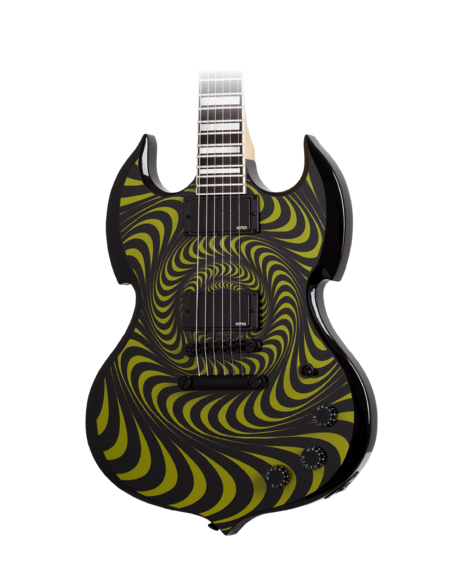
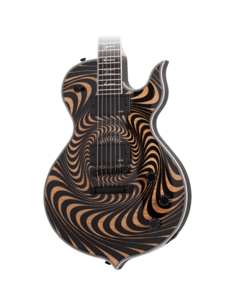
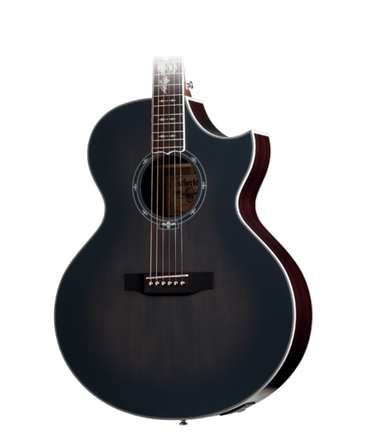
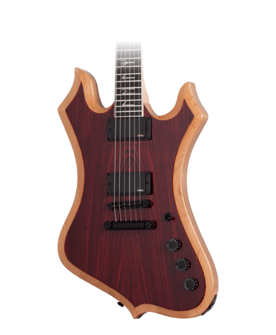
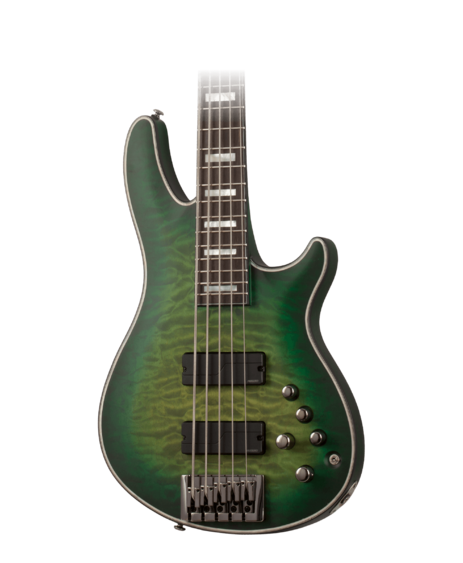

Bienvenido
Desata tu pasión por el rock con nuestras guitarras eléctricas hechas a mano. Inspiradas en los modelos clásicos que hicieron historia, cada guitarra es una obra maestra única, creada con precisión y pasión. Desde riffs poderosos hasta solos emotivos, nuestras guitarras te permiten expresar tu estilo y conectar con la esencia del rock.
Destacados
Selección de los instrumentos más vendidos.




